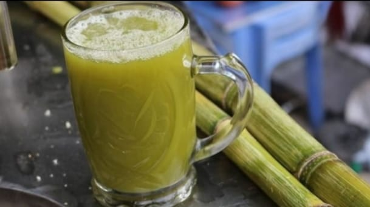

Es tebu adalah minuman yang terbuat dari perasan batang tebu, yang membutnya memiliki rasa yang manis alami, minuman ini sangat digemari oleh masyarakat dan di konsumsi sebagai minuman dibeberapa tempat, khusus nya dimana tebu di komersial dikembangkan di negara-negara Asia tenggara, Asia selatan, mesir, Amerika, brazil dan singapura.
Resep Es Tebu
Batang tebu yang sudah dikupas
Es batu
Alat penggiling tebu
Satu buah saringan